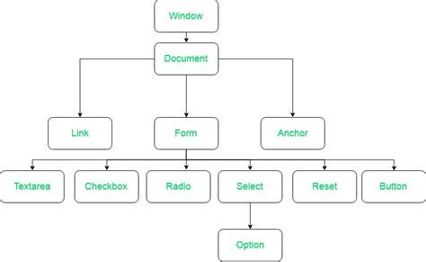

Javascript in file esterni
Js non sta con html
L'idea è sempre quella di suddividere le parti del programma in funzione dei loro compiti.Nel caso di Javascript abbiamo sempre inserito il codice nella pagina html ma è possibile importare il codice da files esterni di tipo js (nel caso di javascript).
<script type="text/javascript" src="script/main.js"></script> Eventi
Qualsiasi tag può subire degli eventi e quindi innescare delle funzioni, se è stata predisposta per quel particolare evento. Gli eventi sono moltissimi e si possono trovare sulle reference, come ad esempio mdn web docs 💙.Gli eventi piú usati sono ovviamente "onclick", "onload", "onchange". C'é un particolare uso dell'evento onsubmit che può venire molto utile nei moduli:
DOM e i suoi metodi
Gli elementi html sono oggetti nel cotesto della Document Object Model e, dal momento che la DOM è strutturata come un albero , questi oggetti sono anche dei nodi. I metodi del document sono quelli che permettono di accedere ai nodi (getElementBy*),creare nodi (createElement) e inserirli all'interno della struttura ad albero (insertElement, insertNode,...) Perché usareinnerHTML?
- può risultare più rapido perché modifica l'albero una sola volta
- però in serendo con innerHTML non si può modificare l'oggetto html perchè non è un oggetto finché non viene inserito nella struttura